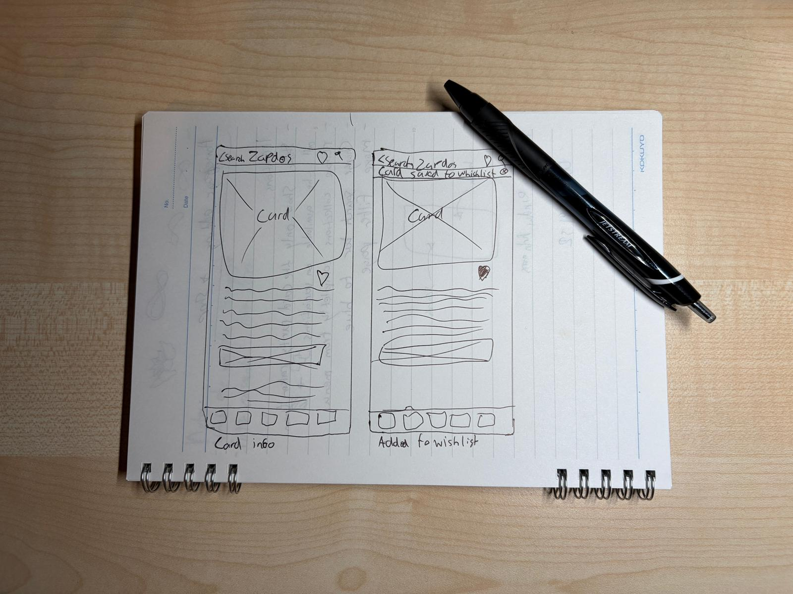
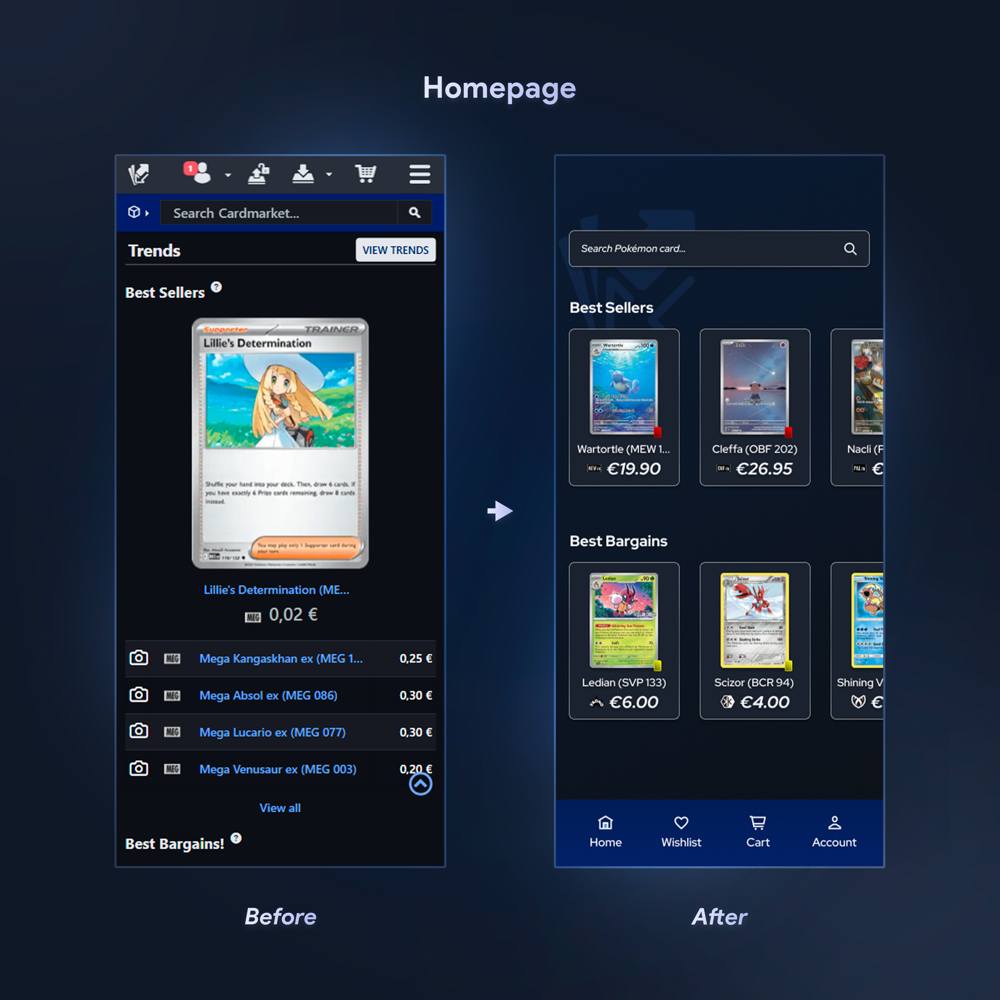
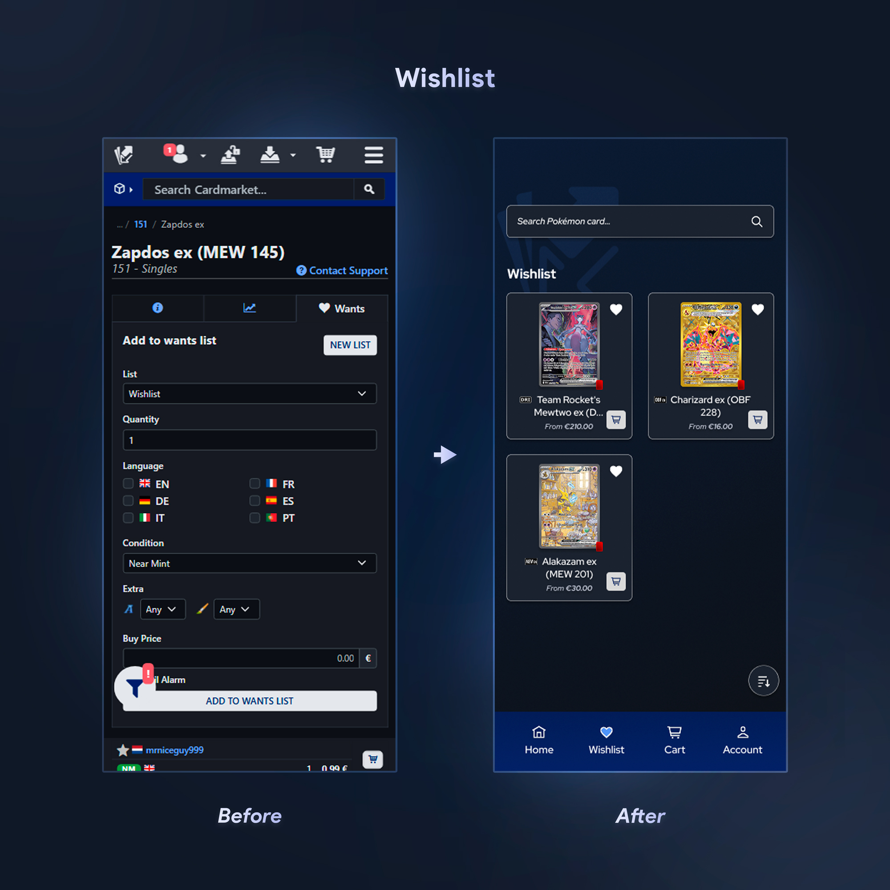
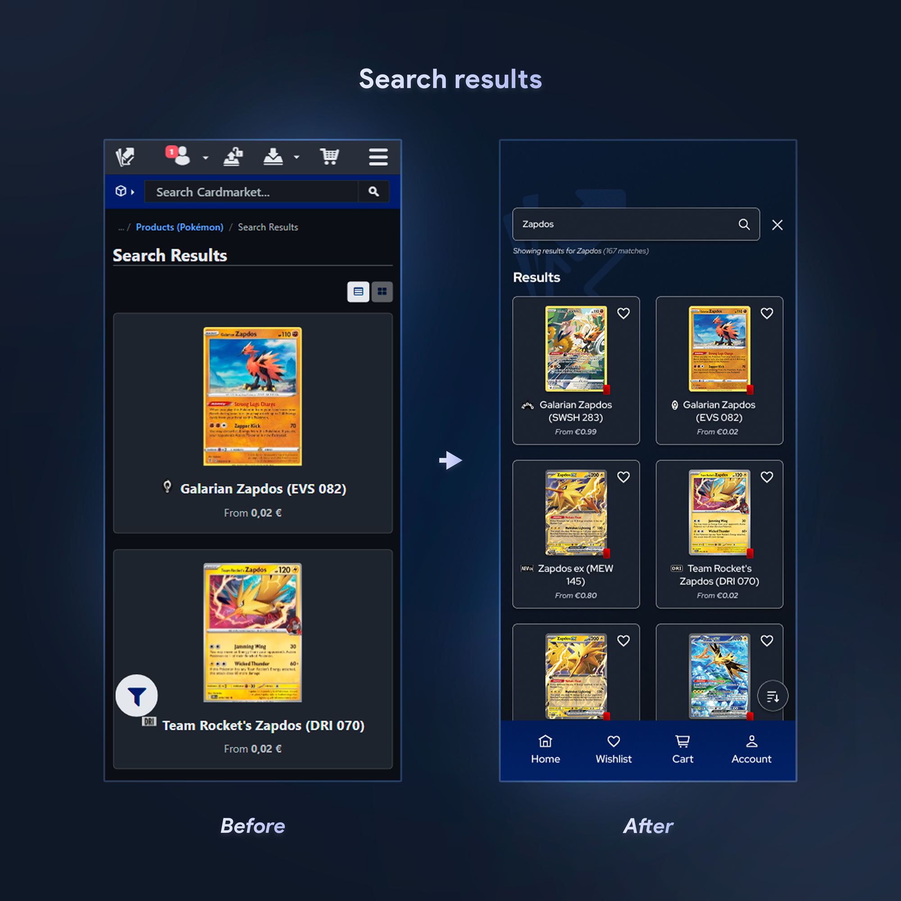
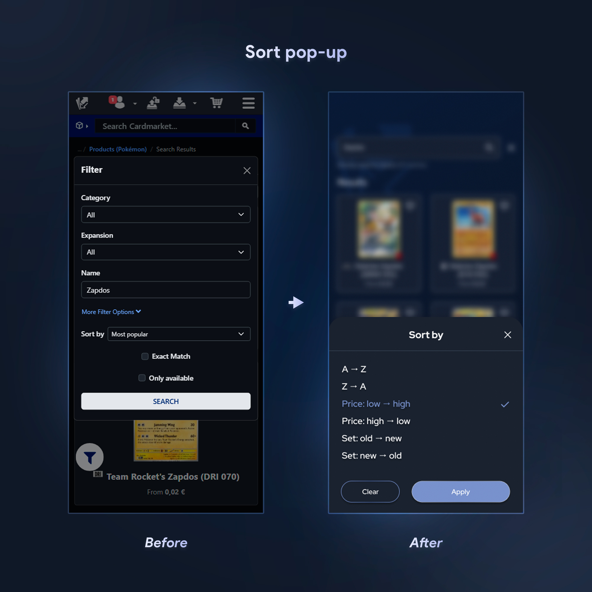
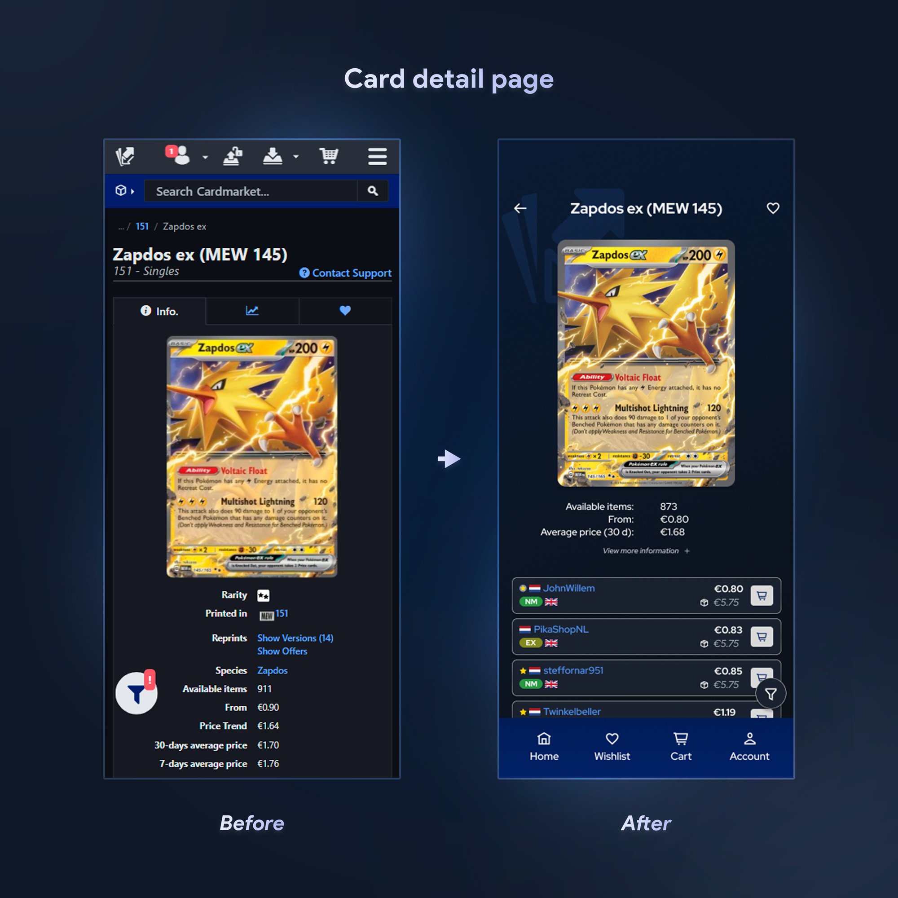
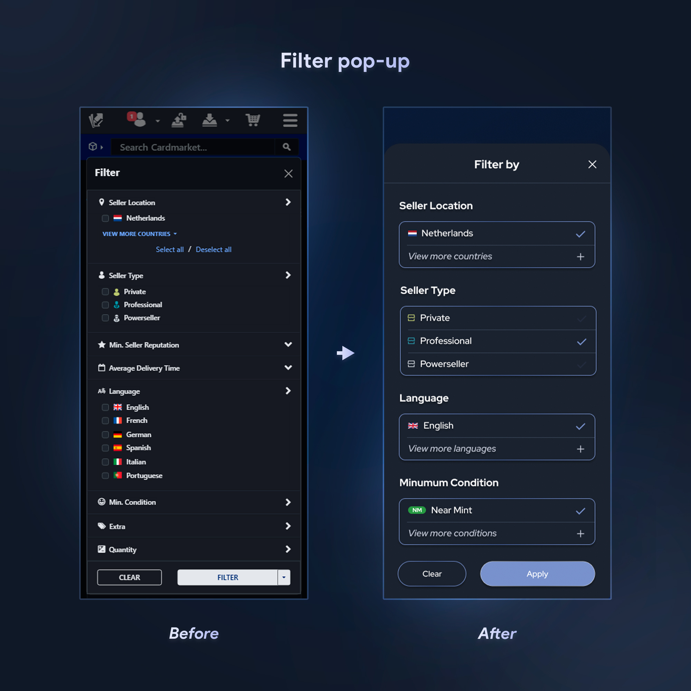

a concept mobile app design

Introduction
Cardmarket is a P2P online marketplace for buying and selling trading cards. The platform lets users buy directly from other users rather than from a webshop. Think of it like Marktplaats, but only for trading cards. It offers secure transactions, reviews, and other features to make the experience safe.
A few months ago, I started collecting Pokémon cards again. I remember when I was a kid, we used to throw them around, and now I’m here hunting down cards to buy and trade. I quickly got introduced to Cardmarket, since it’s the most trusted P2P marketplace in Europe, with both buyers and sellers only from Europe, making it a must for collectors.
After using it almost daily, I noticed a lot of elements that could be improved for a better user experience. After searching online and talking to friends, I realized I wasn’t the only one. Because of that, I saw this as a good opportunity to turn it into a project and build some experience.
Discover: Understanding how users currently shop on mobile
The main issue is that Cardmarket doesn’t have a mobile app, only a website. This is a problem because most users access it on their phones. I was curious to see how other users feel when using it on mobile. Are there more issues that could be improved?
To find out, I did user research through surveys and a few interviews. I created a survey with key questions to get insight into user behavior and their struggles. I also interviewed a few friends who collect Pokémon cards as well.
Based on this research, the key findings were:
- Top activities are: searching cards, checking prices, and buying cards.
- The majority use Cardmarket on their mobile phone.
- Users are generally satisfied but still reported
multiple issues.
Define: Identifying key UX pain points
The survey also gave insights into user pain points. The main points are:
- Browsing and filtering cards on mobile feels slow and cluttered. Having to reapply filters every time you close the site is annoying.
- The “cheapest” card
shown is often in another language instead of English, which can be confusing.
- Shipping costs aren’t visible right away, you have to add the card to your basket to calculate them.
- Adding a card to your wishlist takes too many
steps and feels time-consuming.
Users need a faster and more convenient way to browse and manage cards on mobile. The current Cardmarket experience makes checking prices and comparing sellers slow and inefficient.
Develop – Ideation: Exploring different layout + flow ideas
After defining the main pain points, I started thinking of different ways to make the mobile experience faster and better. I sketched multiple layouts to simplify card search and filters, and brainstormed how the filter section could be less cluttered and cleaner for the user.
Develop – Wireframes
Based on the best ideas, I created low-fidelity wireframes to help validate structure and layout. This also allowed me to brainstorm further while designing.
I focused on making key actions easier compared to Cardmarket now. The main flow I worked on was: homepage → search → card details → filters → add to wishlist. These were the most important steps based on the survey.
Develop – Design Decisions
HomepageI removed unnecessary sections to make the page cleaner and less confusing. I also added card rarity colors so you can quickly see what type of card it is at a glance.
 WishlistI redesigned the wishlist to make it cleaner and easier to use when adding or editing products. Previously, adding a card to your wishlist took too many steps (choosing condition, quantity, language, etc.). I added a simple heart icon that adds the card instantly, and a shopping cart icon on each wishlist item for quick purchase.
 Search resultsI changed the layout to a 2-card grid instead of showing only one card per row. I also added a wishlist icon for quick saving.
 Sort pop-upI redesigned the sort popup to make it more universal and give it a cleaner, simpler look.
 Card detail pageThe card detail page had too much pricing information, and users had to scroll to find the cheapest option. I moved the extra details under a “View more information +” section so the three cheapest prices are shown immediately. I also added the shipping costs directly on the screen, which removes the need to add items to the cart just to compare totals.
 Filter pop-upThe filter popup was cluttered, and choosing the preferred language every time was an unnecessary step. I removed unnecessary filter options and redesigned the popup so it shows your last used filters first. Additional options can be expanded by tapping “view more…”, making the process faster and easier.
Outcome
The redesigned mobile experience made the workflow way simpler. Users can immediately access the three cheapest listings without scrolling, view shipping costs before checkout, save items to their wishlist in one tap, and reuse their previously selected filters. These changes reduced unnecessary steps and improved clarity and overall workflow for the user.
Reflection
This project was really fun to work on, especially because I can relate to the users myself, which made it more interesting. I strengthened my ability to connect research insights to real UI decisions. I designed most of the solutions based on research,
which is really important for UX. It also showed me how small usability changes can make a big improvement in user efficiency.
If I continued, I would do user testing with more collectors and explore extra features
that I didn’t include because of the project scope. I’m currently exploring the possibility of turning this concept into a real product by discussing development options with an app developer. It would be a great achievement to see this
design become something collectors can actually use to improve their buying and trading experience.